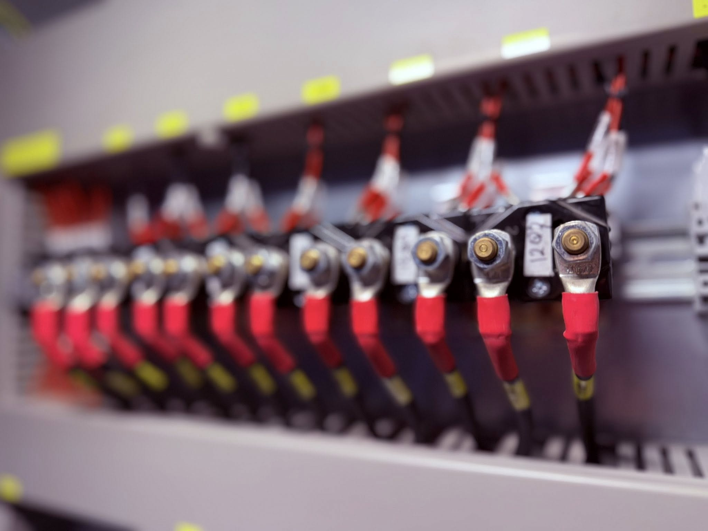

Case Study
Pump Station Control Upgrade
Refactored sequencing and alarms, reduced nuisance trips, improved operator clarity.
Scope: PLC logic + HMI screens + commissioning support

Engineering Precision in Industrial Automation
Real-world automation projects delivered across power, manufacturing, and industrial facilities.

Structured implementation with readable rungs, comments, and versioned deliverables.
Clean, consistent screens with alarm priority and clear operator actions.
Tag mapping, OPC integration, and structured naming for long-term expandability.
4–20 mA, RTD, thermocouple, relays, and marshalling—planned for commissioning.
Fast root-cause analysis without "random parameter changes." Evidence-driven fixes.
Test scripts, punchlists, and turnover packages so operations isn't guessing.
Description

Turbine auxiliaries, balance-of-plant, instrumentation support.
Line controls, batching, conveyors, machine interlocks.
Pumps, level controls, dosing, alarming and reporting.
BMS interfaces, monitoring, energy dashboards.
Replace these placeholders with real case studies when you're ready (even without revealing confidential details).
Refactored sequencing and alarms, reduced nuisance trips, improved operator clarity.
Validated permissives/trips and created a cause & effect matrix for operations.
Implemented structured naming, reduced duplicate tags, improved long-term maintainability.
Predictable delivery beats "debugging in production." We favor clear scope, testable outputs, and clean handover.
Review I/O, drawings, network, constraints, and acceptance criteria.
Cause & effect, alarm philosophy, screen list, test plan.
Implementation with version control and internal reviews.
FAT/SAT support, punchlist closure, turnover package.
Send a brief description, your location, and any relevant drawings/I/O list. We'll reply with clarifying questions and next steps.
No backend here yet—use email for now. We can add a form service later.